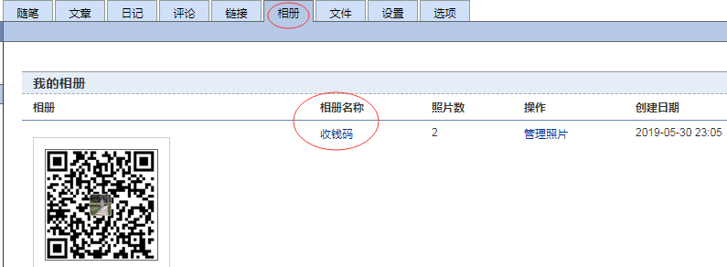
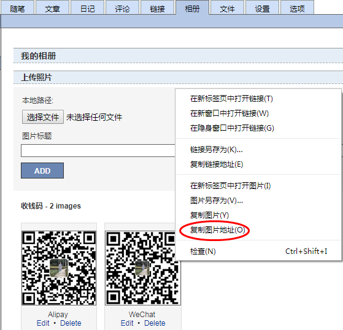
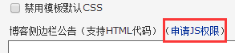
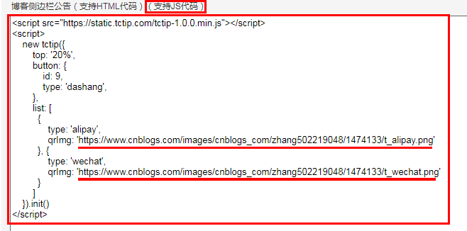
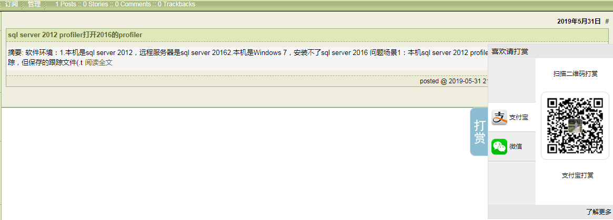
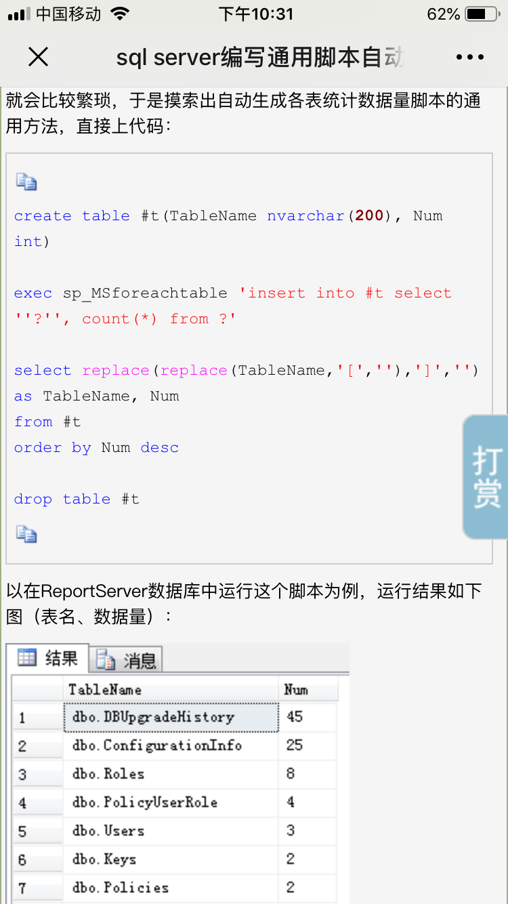
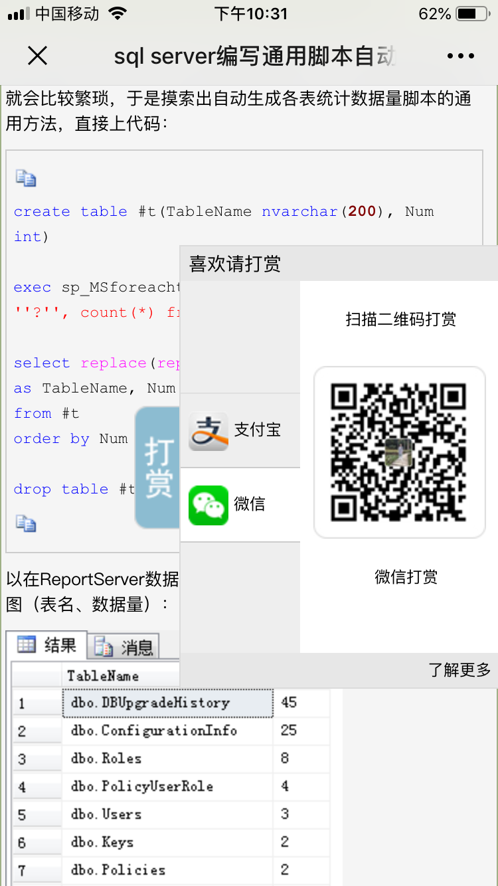
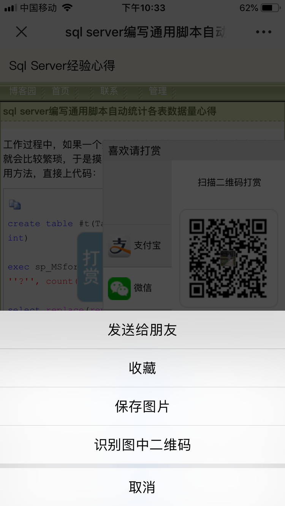

原文连接:https://www.cnblogs.com/zhang502219048/p/10958838.html
1. 收款码
1.1 保存
把自己的支付宝和微信二维码收款码（注意是收款码而不是付款码，别搞错）两个图片保存到电脑，并使用图片编辑工具（Windows自带画图软件，或者QQ等其他截图工具都可以）只截取二维码部分即可。
1.2 上传
进入个人博客，点“管理”，再点“相册”，添加好相册名称（类似文件夹名称），并上传这两个收款二维码，然后可以在图片上面右击鼠标查看或复制图片网址。


2. JS
2.1 开通博客JS权限
点“设置”，找到“博客侧边栏公告（支持HTML代码）”，点击【申请JS权限】，这里需要填写理由，一开始试过填写其他的一些理由但未获通过，后来直接写想增加打赏功能以便增强写技术博文的动力，而打赏功能需要使用JS，申请JS权限便获得通过。

2.2 填写JS代码
在“博客侧边栏公告”下面文本框中输入以下代码，注意把两个收款码图片网址改成你自己的。
<script src="https://static.tctip.com/tctip-1.0.0.min.js"></script>
<script>
new tctip({
top: '20%',
button: {
id: 9,
type: 'dashang',
},
list: [
{
type: 'alipay',
qrImg: 'https://www.cnblogs.com/images/cnblogs_com/zhang502219048/1474133/t_alipay.png'
}, {
type: 'wechat',
qrImg: 'https://www.cnblogs.com/images/cnblogs_com/zhang502219048/1474133/t_wechat.png'
}
]
}).init()
</script>另外说明一下，现在的博客园是https的，所以需要使用https://static.tctip.com/tctip-1.0.0.min.js而不是使用http://static.tctip.com/tctip-1.0.0.min.js，才能够在打开个人博客时能自动出现打赏图片。如果这个js网址是使用http而不用https，默认打开博客是不会有打赏图片的，被拦截了，需要博客读者自己手工主动去允许JS，那样可能会减少很多收入来源哦。

3. 查看效果
3.1 电脑端效果
用手机的支付宝或者微信APP扫描相应二维码收款码，就可以对博主进行打赏支持。（欢迎测试）

3.2 手机端效果
可以把博文通过二维码分享到微信或者支付宝APP，而在APP里面打开链接，也可以正常看到打赏功能，直接按住二维码选中“识别图中二维码”，就可以对博主进行打赏支持。是不是很方便呢？（欢迎测试）




后记：
以上是本人在博客园开通个人技术博客后第二天，自行添加打赏功能的步骤，特此分享一下，希望对想添加打赏功能的朋友有所帮助。如果帮助到了你，欢迎给我打赏支持一下哦。
【转载请注明博文来源：https://www.cnblogs.com/zhang502219048/p/10958838.html】